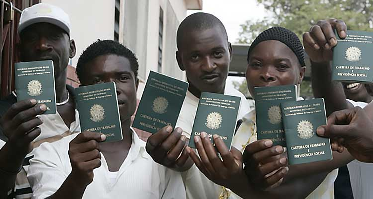

Migração internacional
A migração internacional é o movimento de pessoas que saem e chegam entre países. É importante notar que o termo migração internacional pode ser subdividido em migrantes (referente aos que saem do país) e migrantes (referem-se aos que entram no país).
Refugiados
Essas pessoas têm um fundado temor de perseguição relacionada à sua raça, religião, nacionalidade, pertencimento a um determinado grupo social ou opinião política, bem como devido a violações grosseiras e generalizadas dos direitos humanos e conflitos armados.
Situação na angola

Angola tem 32 milhões de habitantes, quase metade da população não tem eletricidade em suas casas e a maioria das pessoas não tem acesso à água. Apenas 22% dos moradores têm água da rede e 21% contam com caminhões pipa. Devido à desigualdade de Angola, 54% da população vive em pobreza multidimensional, ou seja, não tem acesso a cuidados de saúde de qualidade, educação e oportunidades de emprego. Além disso, a expectativa de vida é de apenas 42 anos.
Porque o Brasil?
Grande parte dos angolanos vieram para o brasil por causa das guerras de independencia e descolonização ocorridas na década de 60 a 80. Outro grande motivo é a busca por estudos no brasil, para se formar e procurar empregos, como na Angola o idioma oficial também é o portugues, tudo fica mais fácil e pratico.
Como estão vivendo
Muitos estrangeiros no Brasil sofrem com suas precárias condições de vida aqui, principalmente quando chegam, ainda sem emprego, moradia, alimentação e dinheiro, sem contar com as discriminações como xenofobia e racismo
Qual o impacto causado no Brasil?
O Brasil continua mais tolerante com a chegada de refugiados transfronteiriços do que a média global, apesar do grande ceticismo sobre a integração dessa população, de acordo com uma pesquisa divulgada recentemente pelo Instituto Ipsos, que entrevistou 18 mil pessoas, entre 16 e 64 anos. Em 26 países - 1000 deles no Brasil. O Brasil segue a Convenção sobre o Estatuto do Refugiado de 1951, cuja legislação proíbe a criminalização da entrada irregular em seu território por estrangeiros identificados como refugiados. Não há emprego e renda para todos porque o crescimento populacional é repentino; porque a falta de emprego começa a afetar a população local, há fome e miséria entre a população flutuante e até mesmo a população local; a taxa de criminalidade aumentou devido à falta de estrutura e organização.